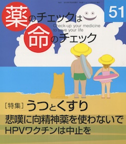

No.51 [特集] うつとくすり 悲嘆に向精神薬を使わないで 2013年7月 発行
症状を訴えれば薬剤は増える
一度増えた薬剤は減らない
減らしてくれる医師は少ない
「うつ」とされる「患者」は増える
薬剤は増える
減らす医師は増えない
どこで断ち切る？
患者と家族、支援する人が、
減らしてくれる医師を探すしかない、のだと思う。
「うつは心のかぜ」というメーカーがつくった
キャンペーンに踊らされないでください。
もくじ
Main Feature 特集 うつとくすり
■ 不安は力？ うつ病の始まり？ 浜 六郎
■ 治療に薬剤は必要か？
うつ病キャンペーンとSRI
■ SRIの害
その① 攻撃性・暴力・犯罪・殺人
その② 催奇形性、新生児死亡、離脱症候群など
■ DSM-5で 悲嘆が病気にされる 谷田憲俊
■ アシュトンマニュアルをもっとよく理解するために
アルコール、東洋人とジアゼパム代謝、抗うつ剤との併用 田中 涼
「高用量で異常が出やすいのはなぜ？」 中川 聡
中毒症状への対処方法について ヘザー・アシュトン
ベンゾジアゼピン剤等価換算表
ベンゾジアゼピン剤と抗うつ剤（SRI）併用例の離脱スケジュール（例）
Topic トピック
■ 49号特集記事への疑問です 梅田忠斉
■ HPVワクチンは危険――中止を 浜 六郎
Series 連載
■ 医師国家試験に挑戦しよう！⑰ 木元康介
■ リレーエッセイ 増えたくすりは減らせます 中原一栄
■ 新・市民の視点 釜ヶ崎の人々のくらしと健康 逢坂隆子
■ 行ってきました 学校安全とスポーツ指導の在り方 木元康介
■ みんなのやさしい生命倫理(51) 生老病死(21) 谷田憲俊
■ コーヒー無礼区 女らしい 坂口啓子
■ 医師国家試験の解答と解説 木元康介
Others
■ 質問箱 日本脳炎ワクチンを取り上げて
おたふくかぜの予防接種と無精子症
■ 読者の声
■ 書評
■ バックナンバー一覧 / 書籍申込用紙
■ 編集後記/奥付